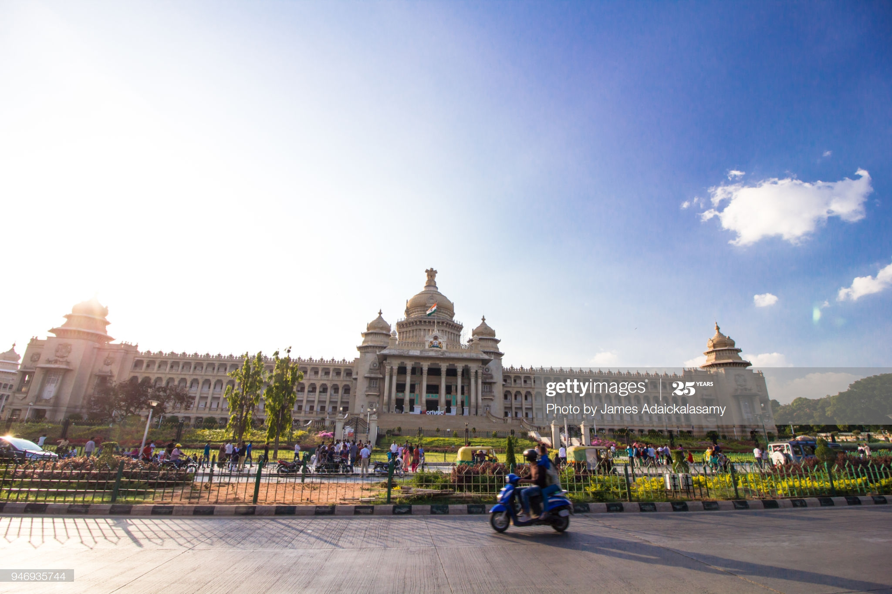

Bangalore Travel Guide
Last Updated: May 11, 2020
Bangalore is one of Asia's fastest growing cities, and India's fifth largest city. Situated at an altitude of 920 metres above sea level, Bangalore is the principal administrative, cultural, commercial and industrial centre of the South Indian State of Karnataka. Thanks to its altitude, Bangalore enjoys a pleasant and equable climate throughout the year. Tree-lined streets and abundant greenery made it the 'Garden City' of India.
However, since local entrepreneurs and technology giant Texas Instruments discovered its potential as a high-tech city in the early 1980s, Bangalore has seen a major technology boom and is now home to more than 250 high-tech companies, including homegrown giants like Wipro and Infosys. The erstwhile garden city has now been pegged the 'Silicon Valley' of India.
Average cost of food – Any kind of food you can think of from any place on earth, Bangalore has it.The people in the city are warm, hospitable and friendly. Bangalore is generally regarded as a place that most visitors like to chill out in. Not to say that it has nothing for the people interested in history. Along with the modern day pubs, discos and hangouts, one can still see remnants of the older Bangalore. All in all, a lovely city to visit.
Transportation costs – Bangalore is very big and sprawling. Even if something seems close, distances can be deceiving as traffic is heavy. Although public transportation exists, Bangalore is not a public transportation-friendly city. Bangalore has a metro but it doesn’t go too many places. The bus system is better but it is also subject to the heavy traffic. A single fare valid on the bus or the metro is $1.75 and be purchased from ticket vending machines in the stations. It’s a great budget-friendly way to go shorter distances in the city.